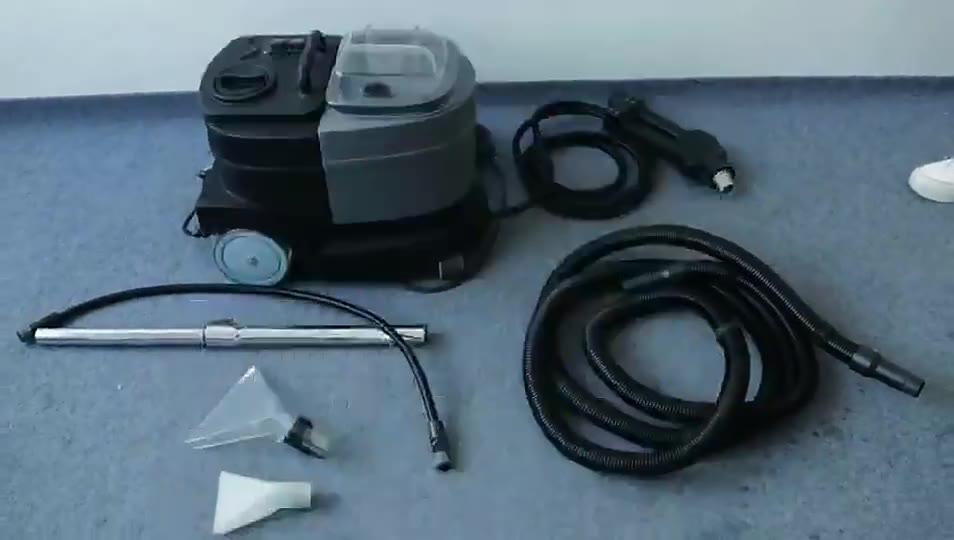
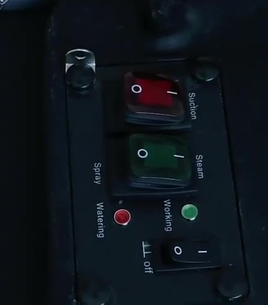
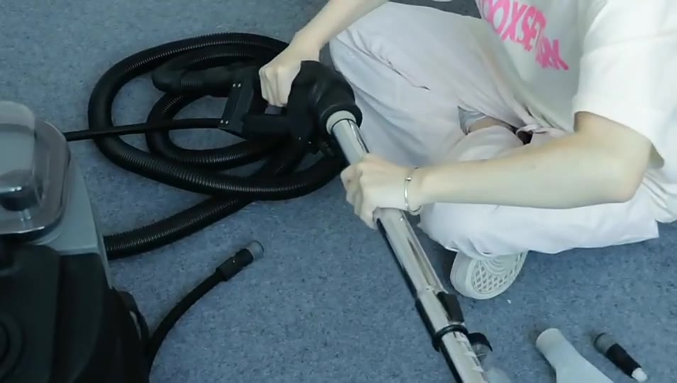
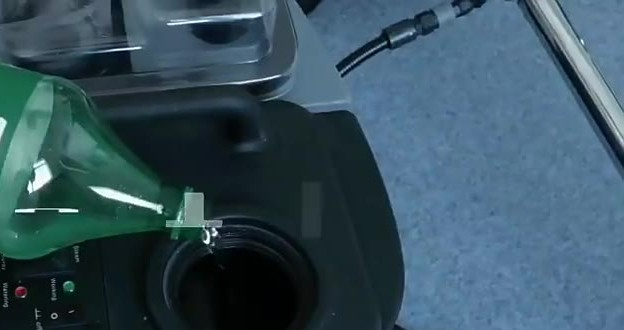
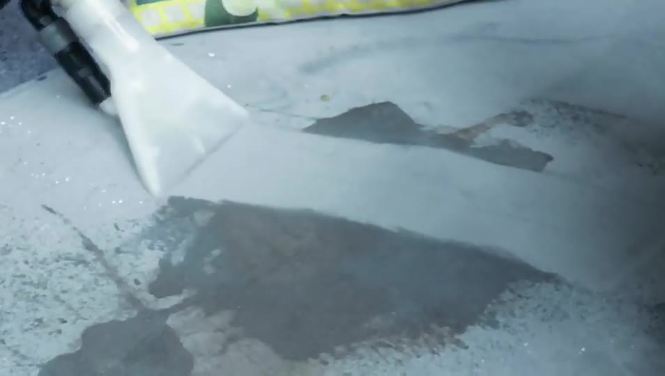
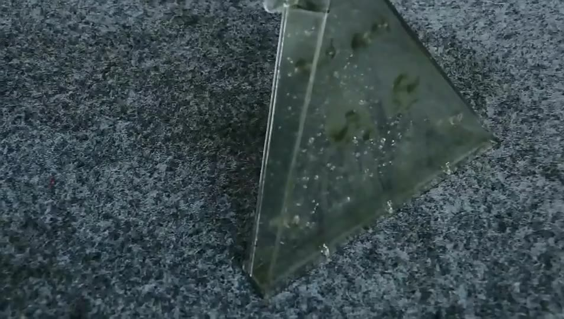
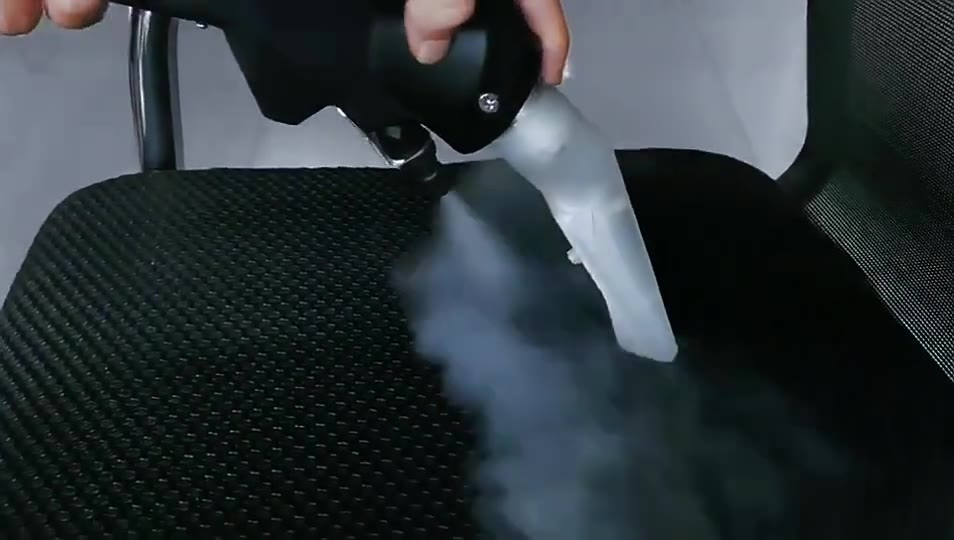
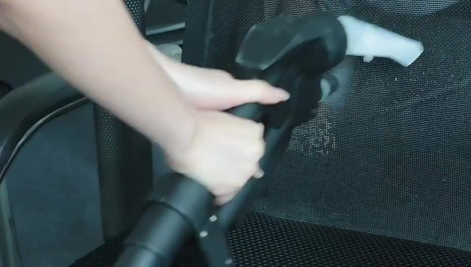

Manipuler la machine d'injection-extraction et vapeur Magwell CP-3S
Préparer, utiliser, entretenir. Toutes les fonctions de la machine et les services Clean Up qu'elle permet de réaliser.

Clean Up · Formation des intervenants · Dakar Photos extraites d'une vidéo de démonstration du fabricant : usage interne de formation uniquement.
1. La machine en bref
D'après la vidéo de démonstration et la fiche du fabricant (Magwell, Suzhou, Chine). Modèle identifié : CP-3S, « machine multifonction vapeur, nettoyage de moquettes et de tissus à faible mousse ».
Fiche technique (fabricant)
Tension
110–220 V
Aspiration
800 W
Chauffe / pompe
1 500 W (voir encadré)
Vapeur
100 °C · 3 à 8 bar · 100 à 500 ml/min
Réservoir d'eau propre
14 L
Réservoir de récupération
8 L, transparent
Câble d'alimentation
8 m
Flexible
4 m (indiqué dans la vidéo)
Niveau sonore
moins de 60 dB

Le panneau de commandes (voir page 3).
Ce qu'elle sait faire
Fonction
À quoi ça sert
1 Injection-extraction
Elle projette de l'eau avec le produit dans le tissu, puis aspire aussitôt l'eau sale. C'est le cœur du métier : moquettes, tapis, canapés, matelas, sièges.
2 Aspiration seule
Elle reprend l'eau restante après le passage, pour un séchage plus rapide.
3 Vapeur à 100 °C
Le pistolet à main projette de la vapeur : détachage, désinfection, recoins, intérieur de voiture, sièges de bureau, acariens.
4 Outils interchangeables
Tête transparente large (moquettes), petit outil blanc (tissus et coutures), pistolet vapeur (tout ce qui est difficile d'accès).
À vérifier sur la plaque de la machine. Les sources ne s'accordent pas sur la puissance : la vidéo affiche « Solution power 1500 W », la fiche du fabricant donne 800 W pour l'aspiration et 1 500 W pour la vapeur, une annonce de revendeur inverse les deux. Lisez la plaque signalétique et notez ici la valeur réelle : ______________
Guide de formation · Magwell CP-3S2
2. Découvrir la machine
Avant la première mission, apprenez à nommer chaque pièce et chaque commande.
Tout ce qui sort de la machine : corps, tube inox, tête transparente, petit outil blanc, pistolet vapeur avec son flexible, grand flexible noir, câble.
Pièce
Rôle
Corps de la machine
Deux réservoirs, le moteur et le panneau de commandes. Il roule sur des roues.
Réservoir d'eau propre (14 L)
Reçoit l'eau et le produit. Niveau visible.
Réservoir de récupération (8 L)
Reçoit l'eau sale aspirée. Transparent : on voit quand il est plein.
Grand flexible noir (4 m)
Relie le tube ou l'outil à la machine.
Tube inox
Prolonge la main : on travaille debout.
Tête transparente
Injecte et aspire sur les surfaces plates. On voit l'eau sale passer.
Petit outil blanc
Tissus, coutures, petites surfaces.
Pistolet vapeur + flexible
Vapeur à 100 °C à la main.
Le panneau, tel qu'il est gravé sur la machine.
Repère gravé
Ce qu'il fait
Interrupteur du bas (« off »)
Marche générale de la machine.
Bascule rouge « Suction »
Met l'aspiration en marche.
Bascule verte « Steam »
Lance la chauffe de la vapeur.
Voyant vert « Working »
La machine est en fonctionnement.
Voyant rouge « Spray / Watering »
Indique l'arrivée d'eau vers la pulvérisation.
La fonction exacte de chaque voyant est déduite de la vidéo. Confirmez-la avec le manuel du fabricant ou en observant la machine, puis corrigez ce tableau.
Guide de formation · Magwell CP-3S3
3. Sécurité : à lire avant de brancher
La machine mêle électricité, eau et vapeur à 100 °C. Le sérieux de l'équipe commence ici.
Vapeur à 100 °C. Elle brûle comme de l'eau bouillante. Ne dirigez jamais le pistolet vers une personne, un animal ou vos mains. Ne le laissez pas allumé en l'air.
Électricité
Câble de 8 m : déroulez-le entièrement, évitez les rallonges fines.
Branchez avec les mains sèches, loin des flaques.
Ne tirez jamais sur le câble pour débrancher.
Un câble abîmé : on n'utilise pas, on prévient le responsable.
Lunettes si vous travaillez à la vapeur près du visage.
Tenue propre et manches courtes ou retroussées au pistolet.
Chez le client
Demandez où se trouve la prise et le point d'eau.
Protégez le sol et les meubles autour avec des bâches.
Faites sortir les enfants et animaux de la zone de travail.
Aérez la pièce : la vapeur laisse de l'humidité.
Faites un test discret (sous un coussin, derrière un meuble) avant de commencer : la couleur ne doit pas déteindre.
Ne faites pas
Ne faites jamais fonctionner sans eau dans le réservoir.
Ne mettez pas de produit inflammable ou de solvant.
Ne nettoyez pas un appareil électrique ou une prise.
Pas de vapeur prolongée sur le cuir, le bois ou la soie : demandez conseil.
Pour une tache ancienne ou incrustée, annoncez-le au client avant : elle peut ne pas disparaître totalement. C'est dit dans les conditions du service.
Guide de formation · Magwell CP-3S4
4. Mise en route, pas à pas
Dans la vidéo, la machine est montée en quelques minutes. Voici la méthode complète.
Posez la machine sur une surface plane, près de la prise et loin de la zone à traiter. Les roues se bloquent à la main.
Branchez le flexible sur la machine, puis le tube inox sur le flexible. Emboîtez jusqu'au clic.
Choisissez l'outil au bout du tube : tête transparente pour une moquette, petit outil blanc pour un canapé.
Remplissez le réservoir d'eau propre (14 L au plus), avec le produit dosé comme indiqué sur son étiquette. On voit le niveau à travers le réservoir.
Vérifiez le réservoir de récupération : il doit être vide.
Branchez et allumez avec l'interrupteur du bas. Le voyant « Working » s'allume.
Lancez l'aspiration avec la bascule rouge « Suction ». Pour la vapeur, la bascule verte « Steam » : laissez chauffer avant d'utiliser le pistolet.

Montage du tube sur le flexible, machine à côté.

Remplissage du réservoir d'eau propre avec le produit.
À confirmer avec le manuel : le dosage exact du produit pour 14 L, le temps de chauffe de la vapeur et la quantité d'eau maximale à ne pas dépasser. Notez les valeurs ici : ____________________
Bon réflexe : avant de brancher, regardez les trois choses qui causent presque tous les problèmes. Le réservoir propre contient de l'eau, le réservoir sale est vide, les raccords sont bien clipsés.
Guide de formation · Magwell CP-3S5
5. Fonction 1 : injection-extraction (moquettes et tapis)
On injecte l'eau et le produit dans les fibres, puis on aspire aussitôt. L'eau sale part dans le réservoir de récupération.

Une passe : la zone claire est la bande déjà traitée.

La tête transparente montre l'eau sale aspirée.
La technique
Aspirez à sec d'abord avec un aspirateur classique pour retirer la poussière et les miettes.
Prétraitez les taches (produit détachant, quelques minutes de pose) avant la machine.
Travaillez par bandes qui se chevauchent d'un tiers, en reculant : on ne marche pas sur ce qu'on vient de nettoyer.
Passe humide : tirez la tête vers vous, en commandant la pulvérisation (poignée ou panneau, à confirmer sur votre machine). Passe sèche : repassez sans pulvériser, plus lentement, pour reprendre l'eau.
Surveillez l'eau dans la tête transparente. Tant qu'elle ressort sale, repassez. Quand elle devient claire, la zone est propre.
Ne détrempez pas. Trop d'eau allonge le séchage et risque de faire remonter les taches. Ne restez pas en place.
La vidéo montre aussi la vapeur sur une moquette : utile pour les zones grasses ou la désinfection. Passez-la avant l'extraction, jamais seule sur une moquette synthétique fragile.
Prix et temps : le tarif de la moquette et du tapis est au m². Mesurez la surface avant de commencer et comparez avec la commande.
Guide de formation · Magwell CP-3S6
6. Fonctions 2 et 3 : outil à main et vapeur
Pour les canapés, les matelas, les sièges et tout ce qui est trop petit ou trop délicat pour la grande tête.

Vapeur à 100 °C sur une assise tissu.

Reprise de l'humidité avec l'outil d'aspiration.
Outil à main (petit outil blanc)
Pour assises, accoudoirs, dossiers, coutures, escaliers.
Même principe : on injecte un peu, on aspire tout de suite.
Travaillez par petites zones, dans le sens du tissu.
Velours : très peu d'eau, passes légères, sans frotter.
Cuir ou simili : peu d'eau et séchage immédiat. Pas de vapeur prolongée.
Pistolet vapeur (100 °C)
Laissez la vapeur chauffer avant de commencer.
Gardez 3 à 5 cm de la surface et bougez en continu.
Détachage, recoins, joints, grilles de ventilation de voiture.
Désinfection des matelas et sièges : le client peut demander la « désinfection anti-acariens à la vapeur ».
Finissez toujours en reprenant l'humidité avec l'aspiration.
Test discret obligatoire avant la vapeur : certains tissus rétrécissent, déteignent ou se marquent. Au moindre doute, arrêtez et appelez le responsable.
Surface
Outil conseillé
Vapeur ?
Précaution
Moquette, tapis
Tête transparente
Zones grasses
Pas de détrempage
Canapé tissu
Petit outil blanc
Oui, légère
Test discret
Canapé velours
Petit outil blanc
Peu
Peu d'eau, sans frotter
Cuir / simili
Petit outil, ou chiffon
Non prolongée
Séchage immédiat
Matelas
Petit outil blanc
Oui (acariens)
Séchage avant de refaire le lit
Sièges de voiture, de bureau
Petit outil + pistolet
Oui
Protéger les parties électriques
Guide de formation · Magwell CP-3S7
7. Les services Clean Up que permet la machine
Chaque service du catalogue, ce que la machine y apporte et la méthode à retenir. Les tarifs sont ceux du site : ne les modifiez pas sur place.
Service Clean Up
Fonction utilisée
Méthode et point d'attention
Nettoyage de canapés et fauteuils dès 5 000 FCFA la place
Outil à main (injection-extraction), vapeur en option
Photo du client à la commande : vérifiez matière et taches. Options : traitement anti-taches, désinfection anti-acariens à la vapeur. Prévoir prise et point d'eau.
Nettoyage de matelas dès 15 000 FCFA
Outil à main, vapeur
Les deux faces si accessible. Option : anti-acariens renforcé. Séchage complet avant de refaire le lit : le matelas doit être utilisable le soir.
Nettoyage de tapis et moquettes 2 500 FCFA/m² tapis · 2 000 FCFA/m² moquette
Tête transparente, aspiration, vapeur pour zones grasses
Surface mesurée sur place. Dégager l'accès avant de commencer. Option : traitement anti-taches.
Lavage automobile, formules Complet et Détaillage option « Shampoing des sièges »
Outil à main pour sièges et tapis de sol, pistolet vapeur pour recoins
Aspirer à sec avant. Sièges en cuir : peu d'eau. Protégez les connecteurs électriques sous les sièges.
Nettoyage de bureaux et commerces
Moquette des bureaux, sièges de bureau (vapeur)
Travailler hors des heures d'activité. Sièges à mailles : vapeur et aspiration.
Nettoyage après travaux
Extraction de moquette et de tissus en fin de chantier
Aspirer à sec la poussière de chantier avant l'eau, sinon elle se transforme en boue.
Services pour lesquels la machine ne sert pas : nettoyage de vitres, ménage courant, repassage. Ils se font avec le matériel habituel.
Autres usages possibles d'après le fabricant : rideaux, tissus d'ameublement, carrelage et joints à la vapeur. Ils ne figurent pas encore au catalogue : parlez-en au responsable avant de les proposer.
Guide de formation · Magwell CP-3S8
8. Déroulé d'une mission
La même séquence à chaque intervention. Elle protège le client, la machine et votre réputation.
Avant de partir
Réservoirs vides, machine propre
Câble de 8 m, flexible, tube, deux outils, pistolet vapeur
Produits, bâches, chiffons microfibre, gants
Photos « avant » du client regardées dans l'application
À l'arrivée
Saluer, se présenter : « Clean Up »
Confirmer la prestation et le prix de la commande
Repérer prise et point d'eau
Protéger le sol et les meubles
Test discret sur chaque matière
Pendant
Aspiration à sec, prétraitement des taches
Injection-extraction par passes, vapeur si prévue
Reprise de l'humidité, ventilation
À la fin
Montrer le résultat au client, avant de ranger
Prendre la photo « après » dans l'application
Remettre les meubles en place
Conseiller : temps de séchage, éviter de s'asseoir tant que c'est humide
Changer le statut de la commande : Terminée
Encaisser comme convenu
Temps de séchage
Le catalogue annonce « quelques heures » pour un canapé, une soirée pour un matelas. Ouvrez les fenêtres et ventilez : cela accélère nettement le séchage.
Un client mécontent ? Ne discutez pas sur place. Notez le point, prenez des photos, et prévenez le responsable : une reprise gratuite vaut mieux qu'un mauvais avis.
Guide de formation · Magwell CP-3S9
9. Entretien et petits dépannages
Après chaque mission
Éteignez, débranchez, laissez refroidir si la vapeur a servi.
Videz le réservoir de récupération (8 L) à l'endroit prévu, jamais sur une plante ou devant le client.
Rincez les deux réservoirs à l'eau claire. Videz l'eau propre restante.
Rincez la tête et les outils. Vérifiez qu'aucun orifice n'est bouché.
Essuyez le corps de la machine, enroulez le câble et le flexible sans les plier net.
Rangez la machine sèche, réservoirs ouverts, pour éviter les odeurs.
Symptôme
Vérifiez d'abord
Rien ne s'allume
Prise, câble, interrupteur du bas.
L'aspiration est faible
Réservoir de récupération plein, flexible mal clipsé ou bouché, filtre encombré.
L'eau ne sort pas de l'outil
Réservoir propre vide, tuyau pincé, buse bouchée.
Pas de vapeur
Bascule « Steam » mal enclenchée, vapeur pas encore chaude, eau insuffisante.
Fuite
Raccords, couvercle des réservoirs mal fermé.
Odeur ou mousse excessive
Réservoir sale non rincé. Trop de produit : respectez le dosage.
Tout s'arrête d'un coup
Protection thermique ou réservoir plein. Éteignez, attendez, vérifiez.
Ne démontez jamais le moteur ni les circuits électriques. Au-delà de ces vérifications simples, arrêtez la machine et contactez le responsable.
Entretien du fabricant à confirmer : fréquence de détartrage, nettoyage du filtre, pièces d'usure. Demandez le manuel au fournisseur (info@magwellglobal.com) et joignez-le à ce guide.
Guide de formation · Magwell CP-3S10
10. Évaluation de fin de formation
Une journée de formation, un essai pratique, puis cette fiche pour valider.
Questions
Citez les trois vérifications avant de brancher.
À quoi sert la bascule rouge « Suction » ? la verte « Steam » ?
Que contient le réservoir de 8 L ? de 14 L ?
Pourquoi aspire-t-on à sec avant de laver ?
Que fait-on avant d'attaquer un canapé en velours ?
Comment sait-on qu'une zone de moquette est propre ?
Que ne fait-on jamais avec le pistolet vapeur ?
Pourquoi faut-il bien ventiler après un matelas ?
Que fait-on du réservoir de récupération après la mission ?
Que fait-on face à une tache qui ne part pas ?
Essai pratique (à cocher par le formateur)
Monte la machine sans aide
Remplit et dose correctement
Branche et allume dans le bon ordre
Fait un test discret
Nettoie 2 m² de moquette en passes régulières
Nettoie un canapé sans détremper
Utilise la vapeur en sécurité
Vide, rince et range la machine
Explique le résultat au client avec politesse
Candidat
Formateur
Date
Décision
☐ Apte ☐ À revoir
Ce que ce guide ne couvre pas encore
Le manuel officiel du fabricant : il fixe les doses, temps de chauffe et pièces d'usure (voir les encadrés jaunes).
Les produits utilisés par Clean Up : une fiche par produit (dosage, matières compatibles, précautions) reste à rédiger.
La vidéo de démonstration porte sur la CP-3S ; une seconde vidéo reçue (moquette violette, tube et tête) peut montrer un autre modèle. Comparez avec votre machine réelle.